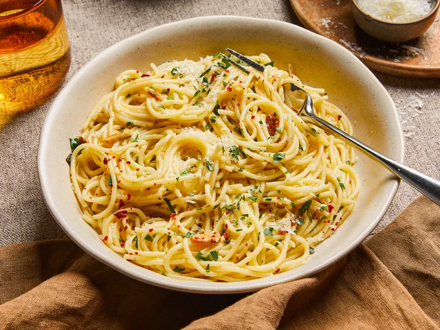

Spaghetti Agilio e Olio

Photo by Kitchen stories
Spaghetti Aglio e Olio is a traditional Italian pasta dish that’s
as simple as it is flavorful. Made with just garlic, olive oil,
and red pepper flakes, this recipe lets basic ingredients shine.
The name translates to "spaghetti with garlic and oil,"
which perfectly sums it up.
Ideal for a quick dinner, it’s light, aromatic, and comes together
in under 20 minutes. Garnished with fresh parsley, it’s a go-to
for busy days or when you want a restaurant-worthy meal with
minimal effort.
Ingredients
- 200g (7 oz) spaghetti
- 4 garlic cloves, thinly sliced
- 1/4 cup extra virgin olive oil
- 1/2 tsp red pepper flakes (optional)
- Salt to taste
- Fresh parsley (chopped, optional)
Steps
- Cook spaghetti in salted water until al dente. Reserve 1/4 cup of pasta water.
- While pasta cooks, heat olive oil in a pan over medium heat.
- Add sliced garlic and red pepper flakes. Sauté until golden (not burnt).
- Add the cooked pasta and a splash of pasta water to the pan. Toss well.
- Season with salt, top with parsley, and serve immediately.
Back to Home